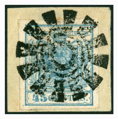
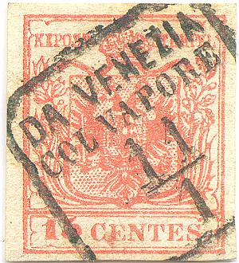
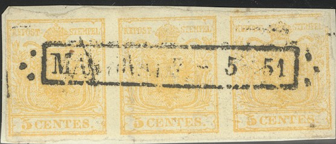
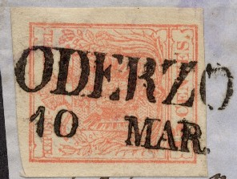

Mute cancel of Milan
Lombardo - Veneto
Return To Catalogue - Austrian Italy 1850-1860 - Austrian Italy 1861-1866 - Austria - Italy
Currency 100 Centesimi = 1 Lira
100 Soldi = 1 Florin (1858)
Note: on my website many of the
pictures can not be seen! They are of course present in the
catalogue;
contact me if you want to purchase the catalogue.
Examples of cancels used in Lombardy - Venice.

Mute cancel of Milan

Bergamo mute cancel

Mute cancel of Morbegno.
Other mute cancels that I've seen are:
Bergamo: Lozenge consisting of 7 lozenges placed
inside each other.
Lecco: 11 parallel lines

Cancel of Venice "V." in three concentric rings on
stamps from Austria

Dal Venezia Col Vapore in a box with date

(Bergamo)




City name in three circles 'GRAVEDONA'
(Belluno and date in a circle consisting of horizontal and
vertical lines
(Sacile and date in a circle consisting of parallel lines)
(Mantova in a double circle with ornaments at the bottom)

St.Dona, Lodi and Verona circular cancel with ornaments at the
bottom



Castelfranco and Milano


Click here for stamps of Austrian Italy issued from 1861 to 1866.
{kind=link}